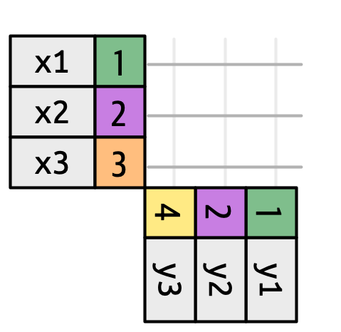
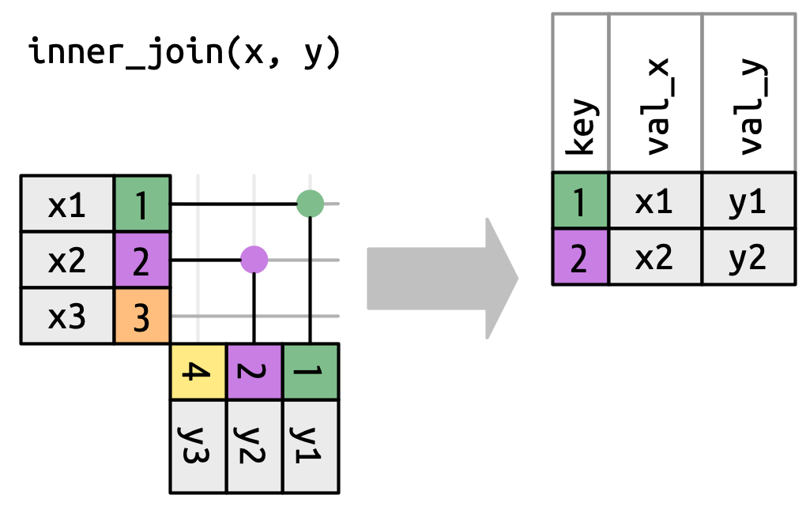
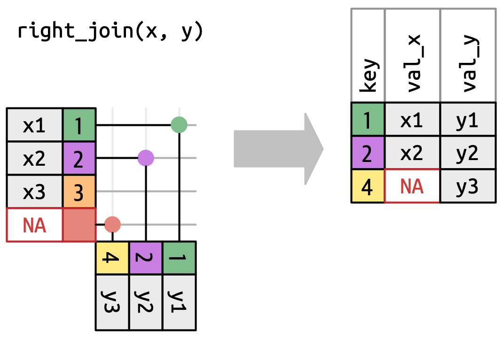
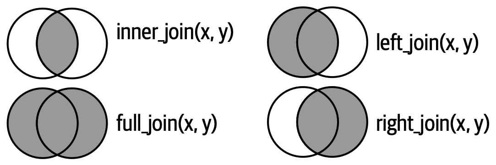
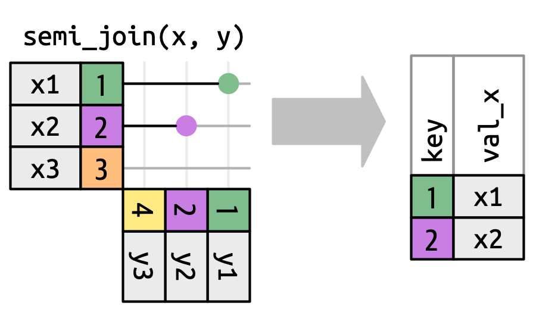
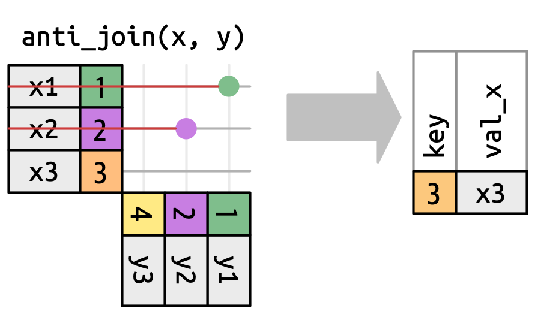
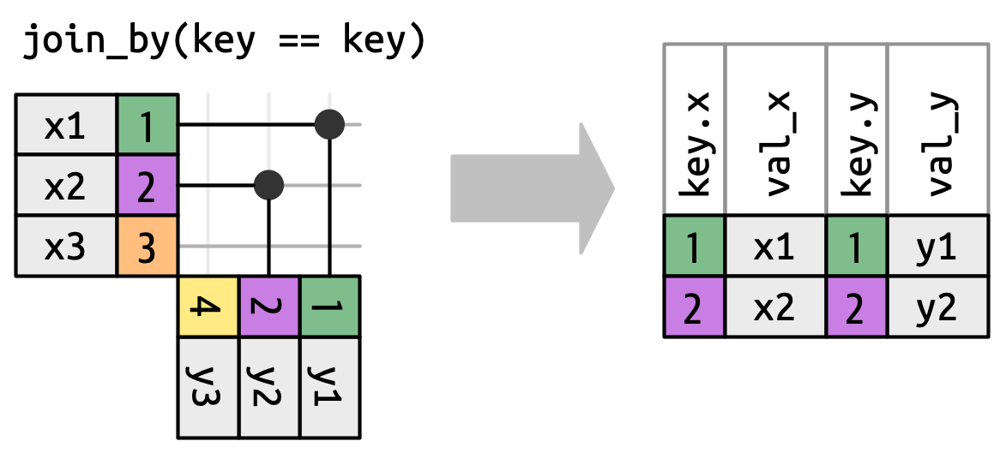
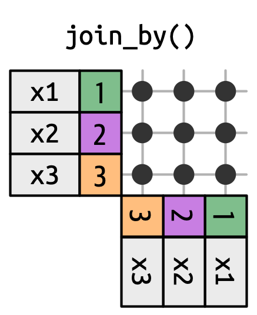
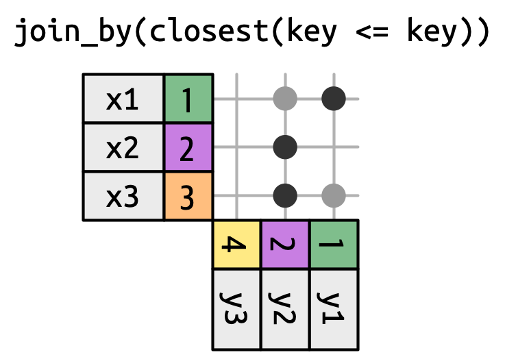

library(tidyverse)
library(nycflights13)Joins
Introduction
It’s rare that a data analysis involves only a single data frame. Typically you have many data frames, and you must join them together to answer the questions that you’re interested in. This chapter will introduce you to two important types of joins:
- Mutating joins, which add new variables to one data frame from matching observations in another.
- Filtering joins, which filter observations from one data frame based on whether or not they match an observation in another.
We’ll begin by discussing keys, the variables used to connect a pair of data frames in a join. We cement the theory with an examination of the keys in the datasets from the nycflights13 package, then use that knowledge to start joining data frames together. Next we’ll discuss how joins work, focusing on their action on the rows. We’ll finish up with a discussion of non-equi joins, a family of joins that provide a more flexible way of matching keys than the default equality relationship.
Prerequisites
In this chapter, we’ll explore the five related datasets from nycflights13 using the join functions from dplyr.
Keys
To understand joins, you need to first understand how two tables can be connected through a pair of keys, within each table. In this section, you’ll learn about the two types of key and see examples of both in the datasets of the nycflights13 package. You’ll also learn how to check that your keys are valid, and what to do if your table lacks a key.
Primary and foreign keys
Every join involves a pair of keys: a primary key and a foreign key. A primary key is a variable or set of variables that uniquely identifies each observation. When more than one variable is needed, the key is called a compound key. For example, in nycflights13:
airlinesrecords two pieces of data about each airline: its carrier code and its full name. You can identify an airline with its two letter carrier code, makingcarrierthe primary key.airlines #> # A tibble: 16 × 2 #> carrier name #> <chr> <chr> #> 1 9E Endeavor Air Inc. #> 2 AA American Airlines Inc. #> 3 AS Alaska Airlines Inc. #> 4 B6 JetBlue Airways #> 5 DL Delta Air Lines Inc. #> 6 EV ExpressJet Airlines Inc. #> # ℹ 10 more rowsairportsrecords data about each airport. You can identify each airport by its three letter airport code, makingfaathe primary key.airports #> # A tibble: 1,458 × 8 #> faa name lat lon alt tz dst #> <chr> <chr> <dbl> <dbl> <dbl> <dbl> <chr> #> 1 04G Lansdowne Airport 41.1 -80.6 1044 -5 A #> 2 06A Moton Field Municipal Airport 32.5 -85.7 264 -6 A #> 3 06C Schaumburg Regional 42.0 -88.1 801 -6 A #> 4 06N Randall Airport 41.4 -74.4 523 -5 A #> 5 09J Jekyll Island Airport 31.1 -81.4 11 -5 A #> 6 0A9 Elizabethton Municipal Airpo… 36.4 -82.2 1593 -5 A #> # ℹ 1,452 more rows #> # ℹ 1 more variable: tzone <chr>planesrecords data about each plane. You can identify a plane by its tail number, makingtailnumthe primary key.planes #> # A tibble: 3,322 × 9 #> tailnum year type manufacturer model engines #> <chr> <int> <chr> <chr> <chr> <int> #> 1 N10156 2004 Fixed wing multi… EMBRAER EMB-145XR 2 #> 2 N102UW 1998 Fixed wing multi… AIRBUS INDUSTR… A320-214 2 #> 3 N103US 1999 Fixed wing multi… AIRBUS INDUSTR… A320-214 2 #> 4 N104UW 1999 Fixed wing multi… AIRBUS INDUSTR… A320-214 2 #> 5 N10575 2002 Fixed wing multi… EMBRAER EMB-145LR 2 #> 6 N105UW 1999 Fixed wing multi… AIRBUS INDUSTR… A320-214 2 #> # ℹ 3,316 more rows #> # ℹ 3 more variables: seats <int>, speed <int>, engine <chr>weatherrecords data about the weather at the origin airports. You can identify each observation by the combination of location and time, makingoriginandtime_hourthe compound primary key.weather #> # A tibble: 26,115 × 15 #> origin year month day hour temp dewp humid wind_dir #> <chr> <int> <int> <int> <int> <dbl> <dbl> <dbl> <dbl> #> 1 EWR 2013 1 1 1 39.0 26.1 59.4 270 #> 2 EWR 2013 1 1 2 39.0 27.0 61.6 250 #> 3 EWR 2013 1 1 3 39.0 28.0 64.4 240 #> 4 EWR 2013 1 1 4 39.9 28.0 62.2 250 #> 5 EWR 2013 1 1 5 39.0 28.0 64.4 260 #> 6 EWR 2013 1 1 6 37.9 28.0 67.2 240 #> # ℹ 26,109 more rows #> # ℹ 6 more variables: wind_speed <dbl>, wind_gust <dbl>, …
A foreign key is a variable (or set of variables) that corresponds to a primary key in another table. For example:
flights$tailnumis a foreign key that corresponds to the primary keyplanes$tailnum.flights$carrieris a foreign key that corresponds to the primary keyairlines$carrier.flights$originis a foreign key that corresponds to the primary keyairports$faa.flights$destis a foreign key that corresponds to the primary keyairports$faa.flights$origin-flights$time_houris a compound foreign key that corresponds to the compound primary keyweather$origin-weather$time_hour.
These relationships are summarized visually in Figure 1.

You’ll notice a nice feature in the design of these keys: the primary and foreign keys almost always have the same names, which, as you’ll see shortly, will make your joining life much easier. It’s also worth noting the opposite relationship: almost every variable name used in multiple tables has the same meaning in each place. There’s only one exception: year means year of departure in flights and year of manufacturer in planes. This will become important when we start actually joining tables together.
Checking primary keys
Now that that we’ve identified the primary keys in each table, it’s good practice to verify that they do indeed uniquely identify each observation. One way to do that is to count() the primary keys and look for entries where n is greater than one. This reveals that planes and weather both look good:
planes |>
count(tailnum) |>
filter(n > 1)
#> # A tibble: 0 × 2
#> # ℹ 2 variables: tailnum <chr>, n <int>
weather |>
count(time_hour, origin) |>
filter(n > 1)
#> # A tibble: 0 × 3
#> # ℹ 3 variables: time_hour <dttm>, origin <chr>, n <int>You should also check for missing values in your primary keys — if a value is missing then it can’t identify an observation!
planes |>
filter(is.na(tailnum))
#> # A tibble: 0 × 9
#> # ℹ 9 variables: tailnum <chr>, year <int>, type <chr>, manufacturer <chr>,
#> # model <chr>, engines <int>, seats <int>, speed <int>, engine <chr>
weather |>
filter(is.na(time_hour) | is.na(origin))
#> # A tibble: 0 × 15
#> # ℹ 15 variables: origin <chr>, year <int>, month <int>, day <int>,
#> # hour <int>, temp <dbl>, dewp <dbl>, humid <dbl>, wind_dir <dbl>, …Surrogate keys
So far we haven’t talked about the primary key for flights. It’s not super important here, because there are no data frames that use it as a foreign key, but it’s still useful to consider because it’s easier to work with observations if we have some way to describe them to others.
After a little thinking and experimentation, we determined that there are three variables that together uniquely identify each flight:
flights |>
count(time_hour, carrier, flight) |>
filter(n > 1)
#> # A tibble: 0 × 4
#> # ℹ 4 variables: time_hour <dttm>, carrier <chr>, flight <int>, n <int>Does the absence of duplicates automatically make time_hour-carrier-flight a primary key? It’s certainly a good start, but it doesn’t guarantee it. For example, are altitude and latitude a good primary key for airports?
airports |>
count(alt, lat) |>
filter(n > 1)
#> # A tibble: 1 × 3
#> alt lat n
#> <dbl> <dbl> <int>
#> 1 13 40.6 2Identifying an airport by its altitude and latitude is clearly a bad idea, and in general it’s not possible to know from the data alone whether or not a combination of variables makes a good a primary key. But for flights, the combination of time_hour, carrier, and flight seems reasonable because it would be really confusing for an airline and its customers if there were multiple flights with the same flight number in the air at the same time.
That said, we might be better off introducing a simple numeric surrogate key using the row number:
flights2 <- flights |>
mutate(id = row_number(), .before = 1)
flights2
#> # A tibble: 336,776 × 20
#> id year month day dep_time sched_dep_time dep_delay arr_time
#> <int> <int> <int> <int> <int> <int> <dbl> <int>
#> 1 1 2013 1 1 517 515 2 830
#> 2 2 2013 1 1 533 529 4 850
#> 3 3 2013 1 1 542 540 2 923
#> 4 4 2013 1 1 544 545 -1 1004
#> 5 5 2013 1 1 554 600 -6 812
#> 6 6 2013 1 1 554 558 -4 740
#> # ℹ 336,770 more rows
#> # ℹ 12 more variables: sched_arr_time <int>, arr_delay <dbl>, …Surrogate keys can be particularly useful when communicating to other humans: it’s much easier to tell someone to take a look at flight 2001 than to say look at UA430 which departed 9am 2013-01-03.
Exercises
We forgot to draw the relationship between
weatherandairportsin Figure 1. What is the relationship and how should it appear in the diagram?weatheronly contains information for the three origin airports in NYC. If it contained weather records for all airports in the USA, what additional connection would it make toflights?The
year,month,day,hour, andoriginvariables almost form a compound key forweather, but there’s one hour that has duplicate observations. Can you figure out what’s special about that hour?We know that some days of the year are special and fewer people than usual fly on them (e.g., Christmas eve and Christmas day). How might you represent that data as a data frame? What would be the primary key? How would it connect to the existing data frames?
Draw a diagram illustrating the connections between the
Batting,People, andSalariesdata frames in the Lahman package. Draw another diagram that shows the relationship betweenPeople,Managers,AwardsManagers. How would you characterize the relationship between theBatting,Pitching, andFieldingdata frames?
Basic joins
Now that you understand how data frames are connected via keys, we can start using joins to better understand the flights dataset. dplyr provides six join functions: left_join(), inner_join(), right_join(), full_join(), semi_join(), and anti_join(). They all have the same interface: they take a pair of data frames (x and y) and return a data frame. The order of the rows and columns in the output is primarily determined by x.
In this section, you’ll learn how to use one mutating join, left_join(), and two filtering joins, semi_join() and anti_join(). In the next section, you’ll learn exactly how these functions work, and about the remaining inner_join(), right_join() and full_join().
Mutating joins
A mutating join allows you to combine variables from two data frames: it first matches observations by their keys, then copies across variables from one data frame to the other. Like mutate(), the join functions add variables to the right, so if your dataset has many variables, you won’t see the new ones. For these examples, we’ll make it easier to see what’s going on by creating a narrower dataset with just six variables1:
flights2 <- flights |>
select(year, time_hour, origin, dest, tailnum, carrier)
flights2
#> # A tibble: 336,776 × 6
#> year time_hour origin dest tailnum carrier
#> <int> <dttm> <chr> <chr> <chr> <chr>
#> 1 2013 2013-01-01 05:00:00 EWR IAH N14228 UA
#> 2 2013 2013-01-01 05:00:00 LGA IAH N24211 UA
#> 3 2013 2013-01-01 05:00:00 JFK MIA N619AA AA
#> 4 2013 2013-01-01 05:00:00 JFK BQN N804JB B6
#> 5 2013 2013-01-01 06:00:00 LGA ATL N668DN DL
#> 6 2013 2013-01-01 05:00:00 EWR ORD N39463 UA
#> # ℹ 336,770 more rowsThere are four types of mutating join, but there’s one that you’ll use almost all of the time: left_join(). It’s special because the output will always have the same rows as x, the data frame you’re joining to2. The primary use of left_join() is to add in additional metadata. For example, we can use left_join() to add the full airline name to the flights2 data:
flights2 |>
left_join(airlines)
#> Joining with `by = join_by(carrier)`
#> # A tibble: 336,776 × 7
#> year time_hour origin dest tailnum carrier name
#> <int> <dttm> <chr> <chr> <chr> <chr> <chr>
#> 1 2013 2013-01-01 05:00:00 EWR IAH N14228 UA United Air Lines In…
#> 2 2013 2013-01-01 05:00:00 LGA IAH N24211 UA United Air Lines In…
#> 3 2013 2013-01-01 05:00:00 JFK MIA N619AA AA American Airlines I…
#> 4 2013 2013-01-01 05:00:00 JFK BQN N804JB B6 JetBlue Airways
#> 5 2013 2013-01-01 06:00:00 LGA ATL N668DN DL Delta Air Lines Inc.
#> 6 2013 2013-01-01 05:00:00 EWR ORD N39463 UA United Air Lines In…
#> # ℹ 336,770 more rowsOr we could find out the temperature and wind speed when each plane departed:
flights2 |>
left_join(weather |> select(origin, time_hour, temp, wind_speed))
#> Joining with `by = join_by(time_hour, origin)`
#> # A tibble: 336,776 × 8
#> year time_hour origin dest tailnum carrier temp wind_speed
#> <int> <dttm> <chr> <chr> <chr> <chr> <dbl> <dbl>
#> 1 2013 2013-01-01 05:00:00 EWR IAH N14228 UA 39.0 12.7
#> 2 2013 2013-01-01 05:00:00 LGA IAH N24211 UA 39.9 15.0
#> 3 2013 2013-01-01 05:00:00 JFK MIA N619AA AA 39.0 15.0
#> 4 2013 2013-01-01 05:00:00 JFK BQN N804JB B6 39.0 15.0
#> 5 2013 2013-01-01 06:00:00 LGA ATL N668DN DL 39.9 16.1
#> 6 2013 2013-01-01 05:00:00 EWR ORD N39463 UA 39.0 12.7
#> # ℹ 336,770 more rowsOr what size of plane was flying:
flights2 |>
left_join(planes |> select(tailnum, type, engines, seats))
#> Joining with `by = join_by(tailnum)`
#> # A tibble: 336,776 × 9
#> year time_hour origin dest tailnum carrier type
#> <int> <dttm> <chr> <chr> <chr> <chr> <chr>
#> 1 2013 2013-01-01 05:00:00 EWR IAH N14228 UA Fixed wing multi en…
#> 2 2013 2013-01-01 05:00:00 LGA IAH N24211 UA Fixed wing multi en…
#> 3 2013 2013-01-01 05:00:00 JFK MIA N619AA AA Fixed wing multi en…
#> 4 2013 2013-01-01 05:00:00 JFK BQN N804JB B6 Fixed wing multi en…
#> 5 2013 2013-01-01 06:00:00 LGA ATL N668DN DL Fixed wing multi en…
#> 6 2013 2013-01-01 05:00:00 EWR ORD N39463 UA Fixed wing multi en…
#> # ℹ 336,770 more rows
#> # ℹ 2 more variables: engines <int>, seats <int>When left_join() fails to find a match for a row in x, it fills in the new variables with missing values. For example, there’s no information about the plane with tail number N3ALAA so the type, engines, and seats will be missing:
flights2 |>
filter(tailnum == "N3ALAA") |>
left_join(planes |> select(tailnum, type, engines, seats))
#> Joining with `by = join_by(tailnum)`
#> # A tibble: 63 × 9
#> year time_hour origin dest tailnum carrier type engines seats
#> <int> <dttm> <chr> <chr> <chr> <chr> <chr> <int> <int>
#> 1 2013 2013-01-01 06:00:00 LGA ORD N3ALAA AA <NA> NA NA
#> 2 2013 2013-01-02 18:00:00 LGA ORD N3ALAA AA <NA> NA NA
#> 3 2013 2013-01-03 06:00:00 LGA ORD N3ALAA AA <NA> NA NA
#> 4 2013 2013-01-07 19:00:00 LGA ORD N3ALAA AA <NA> NA NA
#> 5 2013 2013-01-08 17:00:00 JFK ORD N3ALAA AA <NA> NA NA
#> 6 2013 2013-01-16 06:00:00 LGA ORD N3ALAA AA <NA> NA NA
#> # ℹ 57 more rowsWe’ll come back to this problem a few times in the rest of the chapter.
Specifying join keys
By default, left_join() will use all variables that appear in both data frames as the join key, the so called natural join. This is a useful heuristic, but it doesn’t always work. For example, what happens if we try to join flights2 with the complete planes dataset?
flights2 |>
left_join(planes)
#> Joining with `by = join_by(year, tailnum)`
#> # A tibble: 336,776 × 13
#> year time_hour origin dest tailnum carrier type manufacturer
#> <int> <dttm> <chr> <chr> <chr> <chr> <chr> <chr>
#> 1 2013 2013-01-01 05:00:00 EWR IAH N14228 UA <NA> <NA>
#> 2 2013 2013-01-01 05:00:00 LGA IAH N24211 UA <NA> <NA>
#> 3 2013 2013-01-01 05:00:00 JFK MIA N619AA AA <NA> <NA>
#> 4 2013 2013-01-01 05:00:00 JFK BQN N804JB B6 <NA> <NA>
#> 5 2013 2013-01-01 06:00:00 LGA ATL N668DN DL <NA> <NA>
#> 6 2013 2013-01-01 05:00:00 EWR ORD N39463 UA <NA> <NA>
#> # ℹ 336,770 more rows
#> # ℹ 5 more variables: model <chr>, engines <int>, seats <int>, …We get a lot of missing matches because our join is trying to use tailnum and year as a compound key. Both flights and planes have a year column but they mean different things: flights$year is the year the flight occurred and planes$year is the year the plane was built. We only want to join on tailnum so we need to provide an explicit specification with join_by():
flights2 |>
left_join(planes, join_by(tailnum))
#> # A tibble: 336,776 × 14
#> year.x time_hour origin dest tailnum carrier year.y
#> <int> <dttm> <chr> <chr> <chr> <chr> <int>
#> 1 2013 2013-01-01 05:00:00 EWR IAH N14228 UA 1999
#> 2 2013 2013-01-01 05:00:00 LGA IAH N24211 UA 1998
#> 3 2013 2013-01-01 05:00:00 JFK MIA N619AA AA 1990
#> 4 2013 2013-01-01 05:00:00 JFK BQN N804JB B6 2012
#> 5 2013 2013-01-01 06:00:00 LGA ATL N668DN DL 1991
#> 6 2013 2013-01-01 05:00:00 EWR ORD N39463 UA 2012
#> # ℹ 336,770 more rows
#> # ℹ 7 more variables: type <chr>, manufacturer <chr>, model <chr>, …Note that the year variables are disambiguated in the output with a suffix (year.x and year.y), which tells you whether the variable came from the x or y argument. You can override the default suffixes with the suffix argument.
join_by(tailnum) is short for join_by(tailnum == tailnum). It’s important to know about this fuller form for two reasons. Firstly, it describes the relationship between the two tables: the keys must be equal. That’s why this type of join is often called an equi join. You’ll learn about non-equi joins in Section 1.5.
Secondly, it’s how you specify different join keys in each table. For example, there are two ways to join the flight2 and airports table: either by dest or origin:
flights2 |>
left_join(airports, join_by(dest == faa))
#> # A tibble: 336,776 × 13
#> year time_hour origin dest tailnum carrier name
#> <int> <dttm> <chr> <chr> <chr> <chr> <chr>
#> 1 2013 2013-01-01 05:00:00 EWR IAH N14228 UA George Bush Interco…
#> 2 2013 2013-01-01 05:00:00 LGA IAH N24211 UA George Bush Interco…
#> 3 2013 2013-01-01 05:00:00 JFK MIA N619AA AA Miami Intl
#> 4 2013 2013-01-01 05:00:00 JFK BQN N804JB B6 <NA>
#> 5 2013 2013-01-01 06:00:00 LGA ATL N668DN DL Hartsfield Jackson …
#> 6 2013 2013-01-01 05:00:00 EWR ORD N39463 UA Chicago Ohare Intl
#> # ℹ 336,770 more rows
#> # ℹ 6 more variables: lat <dbl>, lon <dbl>, alt <dbl>, tz <dbl>, …
flights2 |>
left_join(airports, join_by(origin == faa))
#> # A tibble: 336,776 × 13
#> year time_hour origin dest tailnum carrier name
#> <int> <dttm> <chr> <chr> <chr> <chr> <chr>
#> 1 2013 2013-01-01 05:00:00 EWR IAH N14228 UA Newark Liberty Intl
#> 2 2013 2013-01-01 05:00:00 LGA IAH N24211 UA La Guardia
#> 3 2013 2013-01-01 05:00:00 JFK MIA N619AA AA John F Kennedy Intl
#> 4 2013 2013-01-01 05:00:00 JFK BQN N804JB B6 John F Kennedy Intl
#> 5 2013 2013-01-01 06:00:00 LGA ATL N668DN DL La Guardia
#> 6 2013 2013-01-01 05:00:00 EWR ORD N39463 UA Newark Liberty Intl
#> # ℹ 336,770 more rows
#> # ℹ 6 more variables: lat <dbl>, lon <dbl>, alt <dbl>, tz <dbl>, …In older code you might see a different way of specifying the join keys, using a character vector:
by = "x"corresponds tojoin_by(x).by = c("a" = "x")corresponds tojoin_by(a == x).
Now that it exists, we prefer join_by() since it provides a clearer and more flexible specification.
inner_join(), right_join(), full_join() have the same interface as left_join(). The difference is which rows they keep: left join keeps all the rows in x, the right join keeps all rows in y, the full join keeps all rows in either x or y, and the inner join only keeps rows that occur in both x and y. We’ll come back to these in more detail later.
Filtering joins
As you might guess the primary action of a filtering join is to filter the rows. There are two types: semi-joins and anti-joins. Semi-joins keep all rows in x that have a match in y. For example, we could use a semi-join to filter the airports dataset to show just the origin airports:
airports |>
semi_join(flights2, join_by(faa == origin))
#> # A tibble: 3 × 8
#> faa name lat lon alt tz dst tzone
#> <chr> <chr> <dbl> <dbl> <dbl> <dbl> <chr> <chr>
#> 1 EWR Newark Liberty Intl 40.7 -74.2 18 -5 A America/New_York
#> 2 JFK John F Kennedy Intl 40.6 -73.8 13 -5 A America/New_York
#> 3 LGA La Guardia 40.8 -73.9 22 -5 A America/New_YorkOr just the destinations:
airports |>
semi_join(flights2, join_by(faa == dest))
#> # A tibble: 101 × 8
#> faa name lat lon alt tz dst tzone
#> <chr> <chr> <dbl> <dbl> <dbl> <dbl> <chr> <chr>
#> 1 ABQ Albuquerque Internati… 35.0 -107. 5355 -7 A America/Denver
#> 2 ACK Nantucket Mem 41.3 -70.1 48 -5 A America/New_Yo…
#> 3 ALB Albany Intl 42.7 -73.8 285 -5 A America/New_Yo…
#> 4 ANC Ted Stevens Anchorage… 61.2 -150. 152 -9 A America/Anchor…
#> 5 ATL Hartsfield Jackson At… 33.6 -84.4 1026 -5 A America/New_Yo…
#> 6 AUS Austin Bergstrom Intl 30.2 -97.7 542 -6 A America/Chicago
#> # ℹ 95 more rowsAnti-joins are the opposite: they return all rows in x that don’t have a match in y. They’re useful for finding missing values that are implicit in the data, the topic of ?@sec-missing-implicit. Implicitly missing values don’t show up as NAs but instead only exist as an absence. For example, we can find rows that are missing from airports by looking for flights that don’t have a matching destination airport:
flights2 |>
anti_join(airports, join_by(dest == faa)) |>
distinct(dest)
#> # A tibble: 4 × 1
#> dest
#> <chr>
#> 1 BQN
#> 2 SJU
#> 3 STT
#> 4 PSEOr we can find which tailnums are missing from planes:
flights2 |>
anti_join(planes, join_by(tailnum)) |>
distinct(tailnum)
#> # A tibble: 722 × 1
#> tailnum
#> <chr>
#> 1 N3ALAA
#> 2 N3DUAA
#> 3 N542MQ
#> 4 N730MQ
#> 5 N9EAMQ
#> 6 N532UA
#> # ℹ 716 more rowsExercises
Find the 48 hours (over the course of the whole year) that have the worst delays. Cross-reference it with the
weatherdata. Can you see any patterns?Imagine you’ve found the top 10 most popular destinations using this code:
top_dest <- flights2 |> count(dest, sort = TRUE) |> head(10)How can you find all flights to those destinations?
Does every departing flight have corresponding weather data for that hour?
What do the tail numbers that don’t have a matching record in
planeshave in common? (Hint: one variable explains ~90% of the problems.)Add a column to
planesthat lists everycarrierthat has flown that plane. You might expect that there’s an implicit relationship between plane and airline, because each plane is flown by a single airline. Confirm or reject this hypothesis using the tools you’ve learned in previous chapters.Add the latitude and the longitude of the origin and destination airport to
flights. Is it easier to rename the columns before or after the join?Compute the average delay by destination, then join on the
airportsdata frame so you can show the spatial distribution of delays. Here’s an easy way to draw a map of the United States:airports |> semi_join(flights, join_by(faa == dest)) |> ggplot(aes(x = lon, y = lat)) + borders("state") + geom_point() + coord_quickmap()You might want to use the
sizeorcolorof the points to display the average delay for each airport.What happened on June 13 2013? Draw a map of the delays, and then use Google to cross-reference with the weather.
How do joins work?
Now that you’ve used joins a few times it’s time to learn more about how they work, focusing on how each row in x matches rows in y. We’ll begin by introducing a visual representation of joins, using the simple tibbles defined below and shown in Figure 2. In these examples we’ll use a single key called key and a single value column (val_x and val_y), but the ideas all generalize to multiple keys and multiple values.
x <- tribble(
~key, ~val_x,
1, "x1",
2, "x2",
3, "x3"
)
y <- tribble(
~key, ~val_y,
1, "y1",
2, "y2",
4, "y3"
)
key columns map background color to key value. The grey columns represent the “value” columns that are carried along for the ride.
Figure 3 introduces the foundation for our visual representation. It shows all potential matches between x and y as the intersection between lines drawn from each row of x and each row of y. The rows and columns in the output are primarily determined by x, so the x table is horizontal and lines up with the output.

To describe a specific type of join, we indicate matches with dots. The matches determine the rows in the output, a new data frame that contains the key, the x values, and the y values. For example, Figure 4 shows an inner join, where rows are retained if and only if the keys are equal.

x to the row in y that has the same value of key. Each match becomes a row in the output.
We can apply the same principles to explain the outer joins, which keep observations that appear in at least one of the data frames. These joins work by adding an additional “virtual” observation to each data frame. This observation has a key that matches if no other key matches, and values filled with NA. There are three types of outer joins:
A left join keeps all observations in
x, Figure 5. Every row ofxis preserved in the output because it can fall back to matching a row ofNAs iny.
Figure 5: A visual representation of the left join where every row in xappears in the output.A right join keeps all observations in
y, Figure 6. Every row ofyis preserved in the output because it can fall back to matching a row ofNAs inx. The output still matchesxas much as possible; any extra rows fromyare added to the end.Figure 6: A visual representation of the right join where every row of yappears in the output.A full join keeps all observations that appear in
xory, Figure 7. Every row ofxandyis included in the output because bothxandyhave a fall back row ofNAs. Again, the output starts with all rows fromx, followed by the remaining unmatchedyrows.
Figure 7: A visual representation of the full join where every row in xandyappears in the output.
Another way to show how the types of outer join differ is with a Venn diagram, as in Figure 8. However, this is not a great representation because while it might jog your memory about which rows are preserved, it fails to illustrate what’s happening with the columns.

The joins shown here are the so-called equi joins, where rows match if the keys are equal. Equi joins are the most common type of join, so we’ll typically omit the equi prefix, and just say “inner join” rather than “equi inner join”. We’ll come back to non-equi joins in Section 1.5.
Row matching
So far we’ve explored what happens if a row in x matches zero or one row in y. What happens if it matches more than one row? To understand what’s going let’s first narrow our focus to the inner_join() and then draw a picture, Figure 9.

x can match. x1 matches one row in y, x2 matches two rows in y, x3 matches zero rows in y. Note that while there are three rows in x and three rows in the output, there isn’t a direct correspondence between the rows.
There are three possible outcomes for a row in x:
- If it doesn’t match anything, it’s dropped.
- If it matches 1 row in
y, it’s preserved. - If it matches more than 1 row in
y, it’s duplicated once for each match.
In principle, this means that there’s no guaranteed correspondence between the rows in the output and the rows in x, but in practice, this rarely causes problems. There is, however, one particularly dangerous case which can cause a combinatorial explosion of rows. Imagine joining the following two tables:
df1 <- tibble(key = c(1, 2, 2), val_x = c("x1", "x2", "x3"))
df2 <- tibble(key = c(1, 2, 2), val_y = c("y1", "y2", "y3"))While the first row in df1 only matches one row in df2, the second and third rows both match two rows. This is sometimes called a many-to-many join, and will cause dplyr to emit a warning:
df1 |>
inner_join(df2, join_by(key))
#> Warning in inner_join(df1, df2, join_by(key)): Detected an unexpected many-to-many relationship between `x` and `y`.
#> ℹ Row 2 of `x` matches multiple rows in `y`.
#> ℹ Row 2 of `y` matches multiple rows in `x`.
#> ℹ If a many-to-many relationship is expected, set `relationship =
#> "many-to-many"` to silence this warning.
#> # A tibble: 5 × 3
#> key val_x val_y
#> <dbl> <chr> <chr>
#> 1 1 x1 y1
#> 2 2 x2 y2
#> 3 2 x2 y3
#> 4 2 x3 y2
#> 5 2 x3 y3If you are doing this deliberately, you can set relationship = "many-to-many", as the warning suggests.
Filtering joins
The number of matches also determines the behavior of the filtering joins. The semi-join keeps rows in x that have one or more matches in y, as in Figure 10. The anti-join keeps rows in x that match zero rows in y, as in Figure 11. In both cases, only the existence of a match is important; it doesn’t matter how many times it matches. This means that filtering joins never duplicate rows like mutating joins do.

y don’t affect the output.

x that have a match in y.
Non-equi joins
So far you’ve only seen equi joins, joins where the rows match if the x key equals the y key. Now we’re going to relax that restriction and discuss other ways of determining if a pair of rows match.
But before we can do that, we need to revisit a simplification we made above. In equi joins the x keys and y are always equal, so we only need to show one in the output. We can request that dplyr keep both keys with keep = TRUE, leading to the code below and the re-drawn inner_join() in Figure 12.
x |> inner_join(y, join_by(key == key), keep = TRUE)
#> # A tibble: 2 × 4
#> key.x val_x key.y val_y
#> <dbl> <chr> <dbl> <chr>
#> 1 1 x1 1 y1
#> 2 2 x2 2 y2

x and y keys in the output.
When we move away from equi joins we’ll always show the keys, because the key values will often be different. For example, instead of matching only when the x$key and y$key are equal, we could match whenever the x$key is greater than or equal to the y$key, leading to Figure 13. dplyr’s join functions understand this distinction equi and non-equi joins so will always show both keys when you perform a non-equi join.

x key must be greater than or equal to the y key. Many rows generate multiple matches.
Non-equi join isn’t a particularly useful term because it only tells you what the join is not, not what it is. dplyr helps by identifying four particularly useful types of non-equi join:
- Cross joins match every pair of rows.
- Inequality joins use
<,<=,>, and>=instead of==. - Rolling joins are similar to inequality joins but only find the closest match.
- Overlap joins are a special type of inequality join designed to work with ranges.
Each of these is described in more detail in the following sections.
Cross joins
A cross join matches everything, as in Figure 14, generating the Cartesian product of rows. This means the output will have nrow(x) * nrow(y) rows.

x with every row in y.
Cross joins are useful when generating permutations. For example, the code below generates every possible pair of names. Since we’re joining df to itself, this is sometimes called a self-join. Cross joins use a different join function because there’s no distinction between inner/left/right/full when you’re matching every row.
df <- tibble(name = c("John", "Simon", "Tracy", "Max"))
df |> cross_join(df)
#> # A tibble: 16 × 2
#> name.x name.y
#> <chr> <chr>
#> 1 John John
#> 2 John Simon
#> 3 John Tracy
#> 4 John Max
#> 5 Simon John
#> 6 Simon Simon
#> # ℹ 10 more rowsInequality joins
Inequality joins use <, <=, >=, or > to restrict the set of possible matches, as in Figure 13 and Figure 15.

x is joined to y on rows where the key of x is less than the key of y. This makes a triangular shape in the top-left corner.
Inequality joins are extremely general, so general that it’s hard to come up with meaningful specific use cases. One small useful technique is to use them to restrict the cross join so that instead of generating all permutations, we generate all combinations:
df <- tibble(id = 1:4, name = c("John", "Simon", "Tracy", "Max"))
df |> inner_join(df, join_by(id < id))
#> # A tibble: 6 × 4
#> id.x name.x id.y name.y
#> <int> <chr> <int> <chr>
#> 1 1 John 2 Simon
#> 2 1 John 3 Tracy
#> 3 1 John 4 Max
#> 4 2 Simon 3 Tracy
#> 5 2 Simon 4 Max
#> 6 3 Tracy 4 MaxRolling joins
Rolling joins are a special type of inequality join where instead of getting every row that satisfies the inequality, you get just the closest row, as in Figure 16. You can turn any inequality join into a rolling join by adding closest(). For example join_by(closest(x <= y)) matches the smallest y that’s greater than or equal to x, and join_by(closest(x > y)) matches the biggest y that’s less than x.

Rolling joins are particularly useful when you have two tables of dates that don’t perfectly line up and you want to find (e.g.) the closest date in table 1 that comes before (or after) some date in table 2.
For example, imagine that you’re in charge of the party planning commission for your office. Your company is rather cheap so instead of having individual parties, you only have a party once each quarter. The rules for determining when a party will be held are a little complex: parties are always on a Monday, you skip the first week of January since a lot of people are on holiday, and the first Monday of Q3 2022 is July 4, so that has to be pushed back a week. That leads to the following party days:
parties <- tibble(
q = 1:4,
party = ymd(c("2022-01-10", "2022-04-04", "2022-07-11", "2022-10-03"))
)Now imagine that you have a table of employee birthdays:
set.seed(123)
employees <- tibble(
name = sample(babynames::babynames$name, 100),
birthday = ymd("2022-01-01") + (sample(365, 100, replace = TRUE) - 1)
)
employees
#> # A tibble: 100 × 2
#> name birthday
#> <chr> <date>
#> 1 Kemba 2022-01-22
#> 2 Orean 2022-06-26
#> 3 Kirstyn 2022-02-11
#> 4 Amparo 2022-11-11
#> 5 Belen 2022-03-25
#> 6 Rayshaun 2022-01-11
#> # ℹ 94 more rowsAnd for each employee we want to find the first party date that comes after (or on) their birthday. We can express that with a rolling join:
employees |>
left_join(parties, join_by(closest(birthday >= party)))
#> # A tibble: 100 × 4
#> name birthday q party
#> <chr> <date> <int> <date>
#> 1 Kemba 2022-01-22 1 2022-01-10
#> 2 Orean 2022-06-26 2 2022-04-04
#> 3 Kirstyn 2022-02-11 1 2022-01-10
#> 4 Amparo 2022-11-11 4 2022-10-03
#> 5 Belen 2022-03-25 1 2022-01-10
#> 6 Rayshaun 2022-01-11 1 2022-01-10
#> # ℹ 94 more rowsThere is, however, one problem with this approach: the folks with birthdays before January 10 don’t get a party:
employees |>
anti_join(parties, join_by(closest(birthday >= party)))
#> # A tibble: 2 × 2
#> name birthday
#> <chr> <date>
#> 1 Maks 2022-01-07
#> 2 Nalani 2022-01-04To resolve that issue we’ll need to tackle the problem a different way, with overlap joins.
Overlap joins
Overlap joins provide three helpers that use inequality joins to make it easier to work with intervals:
between(x, y_lower, y_upper)is short forx >= y_lower, x <= y_upper.within(x_lower, x_upper, y_lower, y_upper)is short forx_lower >= y_lower, x_upper <= y_upper.overlaps(x_lower, x_upper, y_lower, y_upper)is short forx_lower <= y_upper, x_upper >= y_lower.
Let’s continue the birthday example to see how you might use them. There’s one problem with the strategy we used above: there’s no party preceding the birthdays Jan 1-9. So it might be better to be explicit about the date ranges that each party spans, and make a special case for those early birthdays:
parties <- tibble(
q = 1:4,
party = ymd(c("2022-01-10", "2022-04-04", "2022-07-11", "2022-10-03")),
start = ymd(c("2022-01-01", "2022-04-04", "2022-07-11", "2022-10-03")),
end = ymd(c("2022-04-03", "2022-07-11", "2022-10-02", "2022-12-31"))
)
parties
#> # A tibble: 4 × 4
#> q party start end
#> <int> <date> <date> <date>
#> 1 1 2022-01-10 2022-01-01 2022-04-03
#> 2 2 2022-04-04 2022-04-04 2022-07-11
#> 3 3 2022-07-11 2022-07-11 2022-10-02
#> 4 4 2022-10-03 2022-10-03 2022-12-31Hadley is hopelessly bad at data entry so he also wanted to check that the party periods don’t overlap. One way to do this is by using a self-join to check if any start-end interval overlap with another:
parties |>
inner_join(parties, join_by(overlaps(start, end, start, end), q < q)) |>
select(start.x, end.x, start.y, end.y)
#> # A tibble: 1 × 4
#> start.x end.x start.y end.y
#> <date> <date> <date> <date>
#> 1 2022-04-04 2022-07-11 2022-07-11 2022-10-02Ooops, there is an overlap, so let’s fix that problem and continue:
parties <- tibble(
q = 1:4,
party = ymd(c("2022-01-10", "2022-04-04", "2022-07-11", "2022-10-03")),
start = ymd(c("2022-01-01", "2022-04-04", "2022-07-11", "2022-10-03")),
end = ymd(c("2022-04-03", "2022-07-10", "2022-10-02", "2022-12-31"))
)Now we can match each employee to their party. This is a good place to use unmatched = "error" because we want to quickly find out if any employees didn’t get assigned a party.
employees |>
inner_join(parties, join_by(between(birthday, start, end)), unmatched = "error")
#> # A tibble: 100 × 6
#> name birthday q party start end
#> <chr> <date> <int> <date> <date> <date>
#> 1 Kemba 2022-01-22 1 2022-01-10 2022-01-01 2022-04-03
#> 2 Orean 2022-06-26 2 2022-04-04 2022-04-04 2022-07-10
#> 3 Kirstyn 2022-02-11 1 2022-01-10 2022-01-01 2022-04-03
#> 4 Amparo 2022-11-11 4 2022-10-03 2022-10-03 2022-12-31
#> 5 Belen 2022-03-25 1 2022-01-10 2022-01-01 2022-04-03
#> 6 Rayshaun 2022-01-11 1 2022-01-10 2022-01-01 2022-04-03
#> # ℹ 94 more rowsExercises
Can you explain what’s happening with the keys in this equi join? Why are they different?
x |> full_join(y, join_by(key == key)) #> # A tibble: 4 × 3 #> key val_x val_y #> <dbl> <chr> <chr> #> 1 1 x1 y1 #> 2 2 x2 y2 #> 3 3 x3 <NA> #> 4 4 <NA> y3 x |> full_join(y, join_by(key == key), keep = TRUE) #> # A tibble: 4 × 4 #> key.x val_x key.y val_y #> <dbl> <chr> <dbl> <chr> #> 1 1 x1 1 y1 #> 2 2 x2 2 y2 #> 3 3 x3 NA <NA> #> 4 NA <NA> 4 y3When finding if any party period overlapped with another party period we used
q < qin thejoin_by()? Why? What happens if you remove this inequality?
Summary
In this chapter, you’ve learned how to use mutating and filtering joins to combine data from a pair of data frames. Along the way you learned how to identify keys, and the difference between primary and foreign keys. You also understand how joins work and how to figure out how many rows the output will have. Finally, you’ve gained a glimpse into the power of non-equi joins and seen a few interesting use cases.
This chapter concludes the “Transform” part of the book where the focus was on the tools you could use with individual columns and tibbles. You learned about dplyr and base functions for working with logical vectors, numbers, and complete tables, stringr functions for working with strings, lubridate functions for working with date-times, and forcats functions for working with factors.
In the next part of the book, you’ll learn more about getting various types of data into R in a tidy form.